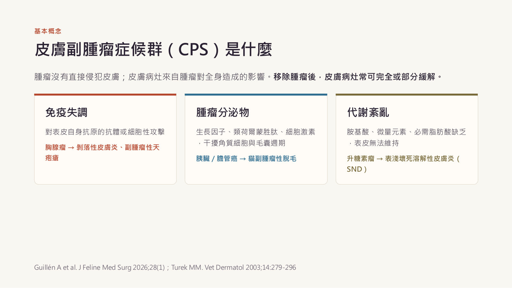
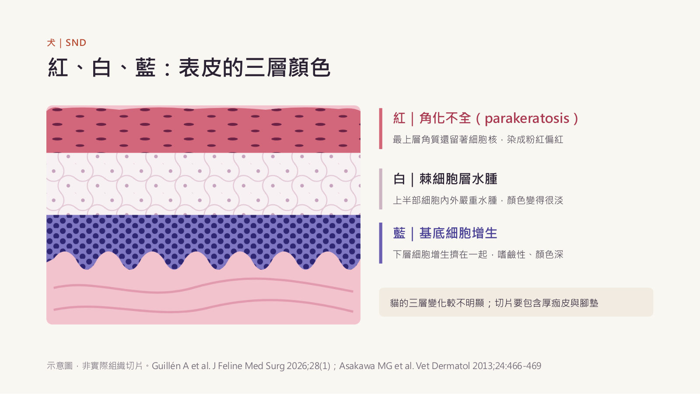
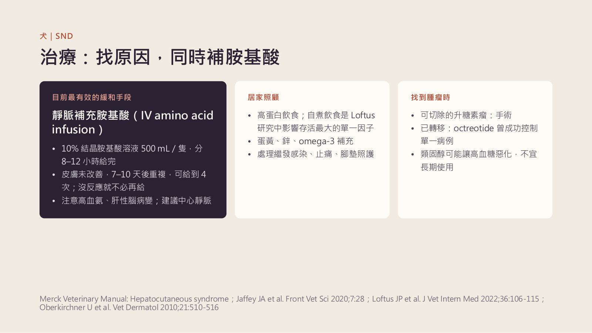
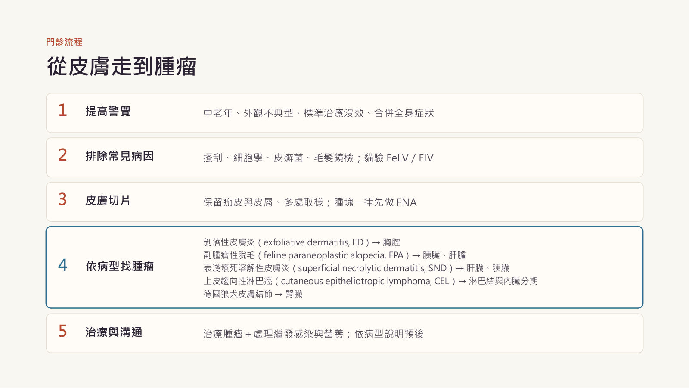

與皮膚相關的副腫瘤症狀
主講：Rita Ho, DVM（practice limited to oncology）
Cutaneous paraneoplastic syndromes in dogs and cats｜獸醫腫瘤學繼續教育 90 分鐘（投影片 64 張＋2 頁講義）｜場次 04
依講者的投影片與講義整理，沒有課堂錄音；投影片本身是中文，這裡以重點整理為主，數字與劑量照投影片。
⭐ 必記原則
- 皮膚副腫瘤症候群＝腫瘤對全身造成的間接後果（免疫失調、腫瘤分泌物、代謝紊亂），可能是隱匿性腫瘤最早的線索
- 想到腫瘤：中老年、外觀不典型、標準治療沒效（類固醇沒效是警訊）、合併全身症狀
- 診斷三件事：高度懷疑、保留痂皮與皮屑的多處切片、影像學；貓 FPA 的血檢常常正常
- 貓剝落性皮膚炎 → 找胸腺瘤；切除後 6/8 皮膚完全緩解，MST 約 2.5 年
- 貓副腫瘤性脫毛（光滑發亮、不癢、背部不受影響）→ 找胰臟、肝膽；胰臟癌病例多在 2 個月內死亡
- 犬 SND：腳墊龜裂＋口鼻眼周痂皮；病理「紅白藍」；犬多數是非腫瘤性肝病；IV 胺基酸＋自煮高蛋白飲食
- 德國狼犬多發皮膚結節 → 查雙側腎臟囊腺癌與 FLCN 突變
- 老狗治不好的「過敏」→ 切片排除皮膚型淋巴癌；時大時小、一摸就紅腫 → 先 FNA 找肥大細胞瘤，不要先打類固醇
基本概念與診斷原則
▾皮膚副腫瘤症候群（CPS）是什麼
腫瘤沒有直接侵犯皮膚；病灶來自腫瘤對全身的影響，移除腫瘤後常可完全或部分緩解。
| 機制 | 說明 | 例子 |
|---|---|---|
| 免疫失調 | 對表皮自身抗原的抗體或細胞性攻擊 | 胸腺瘤 → 剝落性皮膚炎、副腫瘤性天疱瘡 |
| 腫瘤分泌物 | 生長因子、類荷爾蒙胜肽、細胞激素，干擾角質細胞與毛囊週期 | 胰臟／膽管癌 → 貓副腫瘤性脫毛 |
| 代謝紊亂 | 胺基酸、微量元素、必需脂肪酸缺乏 | 升糖素瘤 → SND |

為什麼家醫要認得
- 可能是隱匿性腫瘤最早的線索；飼主先看到的是皮膚，第一個看到的通常是家醫
- 有些治好腫瘤皮膚就跟著好（貓胸腺瘤相關剝落性皮膚炎）
- 有些一出現就是晚期，會改變跟飼主的談話（貓副腫瘤性脫毛）
- 判斷是副腫瘤（借用人醫 Curth 準則）：差不多同時出現、病程平行、特定腫瘤對應特定病型、統計關聯（犬貓多只有病例報告，第 4 點通常無法滿足）
- 最有說服力的例子（Tasker 1999）：貓胰臟癌切除 → 脫毛完全緩解；18 週後轉移 → 脫毛復發
哪些皮膚病要想到腫瘤、怎麼查
| 步驟 | 內容 |
|---|---|
| 提高警覺 | 中老年；外觀或分布不典型、變化快；抗寄生蟲、抗菌、抗黴菌、類固醇都試過還不好；合併體重減輕、食慾差、嗜睡、嘔吐下痢 |
| 先排除常見病因 | 皮膚搔刮、膠帶細胞學、皮癬菌培養或 PCR、貓 FeLV／FIV、CBC、生化、尿液 |
| 皮膚切片 | 區分副腫瘤與原發皮膚病的唯一方法；保留痂皮與皮屑、多處不同階段病灶 |
| 影像學找腫瘤 | 胸腔 X 光三張、強烈建議腹部超音波、需要時 CT |
- 切片：不刷洗、不消毒、不剃除病灶表面，毛用剪的；6–8 mm 打孔多處
- 懷疑 SND：取腳墊或厚痂皮邊緣，多取幾塊（貓的變化比犬不明顯）
- 送件單寫清楚病史與「懷疑副腫瘤」，最好送有皮膚病理經驗的病理師
- 切片只能說「是哪一種皮膚病」；有沒有腫瘤、在哪裡，仍要靠影像
1. 貓：剝落性皮膚炎 vs 副腫瘤性脫毛
▾文獻中的貓皮膚副腫瘤症候群（Guillén 2026）
| 症候群 | 相關腫瘤（例數） | 總例數 |
|---|---|---|
| 剝落性皮膚炎（ED） | 胸腺上皮腫瘤 22、異位胸腺上皮腫瘤 1 | 23 |
| 副腫瘤性脫毛（FPA） | 胰臟腺癌 12、膽管癌 3、肝細胞癌 2、其他 4 | 21 |
| SND | 升糖素瘤、肝神經內分泌癌、肝癌、胰臟癌各 1 | 4 |
| 皮膚脆弱症候群 | 膽管癌 1、濾泡型淋巴瘤 1 | 2 |
| 副腫瘤性天疱瘡 | 胸腺上皮腫瘤 1 | 1 |
| 多灶性非發炎性脫毛 | 胸腺上皮腫瘤 1 | 1 |
| 後腳皮膚壞死 | 濾泡型淋巴瘤 1 | 1 |
| 腹側脫毛合併毛囊壁炎 | 胰臟癌 1 | 1 |
兩個主軸：同樣是副腫瘤，預後完全相反
| 胸腺瘤相關剝落性皮膚炎 | 副腫瘤性脫毛 | |
|---|---|---|
| 相關腫瘤 | 胸腺上皮腫瘤（23 例） | 胰臟腺癌、膽管癌為主（21 例） |
| 外觀 | 全身皮屑、紅斑 → 角化過度、糜爛、痂皮 | 光滑發亮的對稱脫毛，皮膚不脆 |
| 分布 | 頭、頸、軀幹 | 腹側、四肢內側、會陰；背部通常不受影響 |
| 組織病理 | 淋巴球性介面皮膚炎、皮脂腺萎縮或消失 | 毛囊萎縮縮小、角質層消失、無發炎 |
| 腫瘤切除 | 手術貓 6/8 皮膚完全緩解 | 多已轉移，僅 1 例切除 |
| 預後 | 好：手術後 MST 約 2.5 年 | 差：胰臟癌病例多在 2 個月內死亡 |
剝落性皮膚炎（ED）
- 全身皮屑、紅斑、脫毛，逐漸角化過度、糜爛、痂皮；頭頸軀幹為主；毛很容易拔除；常繼發細菌或 Malassezia；後期嗜睡、體重減輕；中老年貓（最年輕 4 歲）
- 機制：胸腺微環境被腫瘤改變 → 自體反應性 T 細胞 → 攻擊表皮與毛囊
- 病理：淋巴球性介面皮膚炎、基底細胞水腫性變性、表皮全層散在單一細胞壞死、角化過度、毛囊壁淋巴球浸潤、皮脂腺萎縮或消失
- 非胸腺瘤 ED 的組織學幾乎一樣（Linek 2015，18 隻；有對 ciclosporin 反應良好的病例）：病理「符合剝落性皮膚炎」只代表病型，一定要做胸腔影像
- 鑑別：皮癬菌、毛囊蟲與姬螯蟎、過敏、落葉型天疱瘡（曾與胸腺瘤 ED 同時出現）、淋巴球性毛囊壁炎、皮脂腺炎、藥物反應、上皮趨向性淋巴瘤、FeLV／FIV 相關皮膚炎
找胸腺瘤與切除後的結果
- 胸腔 X 光三張：前縱膈腔腫塊常是「意外」發現
- 腫塊細胞學或切片；流式細胞的 CD4⁺CD8⁺ 雙陽性在犬可支持胸腺瘤，但貓縱膈腔淋巴瘤也常雙陽性，用處有限
- X 光沒看到不代表沒有：曾有異位胸腺上皮腫瘤長在胸腔入口前方的頸部，X 光陰性、剖檢才發現 → 考慮 CT
- 手術貓 6/8 皮膚完全緩解；術後 2–4 週開始改善，完全緩解約 7 週到 5 個半月
- 胸腺上皮腫瘤手術後 MST 約 2.5 年；1／2／5 年存活 86%／70%／66%；只用類固醇的 2 隻沒改善；無法手術時胸腺瘤對放療敏感
副腫瘤性脫毛（FPA）
- 擴散快、左右對稱、不癢；皮膚光滑發亮但不脆弱；從腹側、頸部、四肢內側、會陰開始，可延伸到臉，背部通常不受影響；部分腳墊脫屑龜裂
- 體重減輕、食慾差、嘔吐、下痢、嗜睡常隨後很快出現
- 容易被誤導：繼發 Malassezia 看起來反而「會癢」，掩蓋原本不癢的脫毛
- 鑑別：自我舔毛（最常混淆）、皮癬菌、毛囊蟲、腎上腺皮質功能亢進、甲狀腺功能亢進、休止期脫毛、圓禿
- 毛髮鏡檢：舔掉的毛毛尖斷裂、毛根還在；FPA 的毛很容易整根拔出、毛根多為休止期
- 病理：毛囊明顯萎縮縮小、休止期化；角質層消失（皮膚發亮＝角質層不見了）；皮脂腺可正常；基本上沒有發炎
- 腫瘤：21 例中 14 隻是胰臟腺癌或膽管癌；看到 FPA 先用腹部超音波看胰臟與肝膽，再加胸腔 X 光或 CT 評估轉移
- 預後：12 隻確診胰臟癌、結果已知的 FPA 貓都在症狀後約 2 個月內死亡或安樂死；唯一切除成功的病例脫毛完全緩解，18 週後轉移復發、術後 126 天安樂死
- 繼發 Malassezia：itraconazole 5–10 mg/kg q24h 可短期改善生活品質；toceranib 可用於無法手術的胰臟癌，對 FPA 是否有幫助未知
2. 貓的少見病型
▾其他少見的貓皮膚副腫瘤症候群
| 症候群 | 相關腫瘤 | 重點 |
|---|---|---|
| SND（4 例） | 升糖素瘤、肝神經內分泌癌、肝癌、胰臟癌 | 腳墊、口鼻、眼周、會陰；紅白藍較不明顯，多取幾塊 |
| 副腫瘤性天疱瘡（1 例） | 淋巴球性胸腺瘤 | 合併重症肌無力；手術＋prednisolone＋chlorambucil，4 年後仍緩解 |
| 皮膚脆弱症候群（2 例） | 膽管癌、濾泡型淋巴瘤 | 一碰就撕裂；外觀與腎上腺皮質功能亢進無法區分 |
| 多灶性非發炎脫毛（1 例） | 胸腺上皮腫瘤 | 背側多灶分布；切除後重新長毛 |
| 後腳對稱性皮膚壞死（1 例） | 濾泡型淋巴瘤 | 皮膚無腫瘤浸潤、無血栓或血管炎 |
胸腺瘤在貓不只會造成剝落性皮膚炎；非典型的脫毛或水疱糜爛，也要照胸腔。
3. 犬：表淺壞死溶解性皮膚炎（SND）
▾同一種皮膚病，好幾個名字
| 名稱 | 意義 |
|---|---|
| SND | 描述皮膚病灶本身 |
| 肝皮症候群（HCS） | SND＋特殊肝病變 |
| NME | 人醫用語，多與升糖素瘤相關 |
| ACHES（Loftus 2022） | 把有肝病變、低胺基酸血症、胺基酸尿但還沒長皮膚病的犬也納進來 |
犬的 SND 多數不是腫瘤造成的：最常見是非腫瘤性特殊肝病變（HCS），少數是升糖素瘤或其他胰臟、肝臟腫瘤，部分與長期 phenobarbital 有關。所以 SND 在犬是「可能」的副腫瘤症狀，一定要找原因。
臨床表現
- 腳墊明顯角化過度、龜裂、痂皮 → 疼痛、跛行
- 皮膚黏膜交界處（口鼻、眼周、肛周、外陰或包皮）；受壓或摩擦部位（肘、跗關節、耳廓）
- 兩側對稱紅斑、痂皮、糜爛，常繼發細菌、Malassezia 或念珠菌；可能合併糖尿病
- Loftus 2022（41 隻）：73% 病程中曾出現 SND；54% 診斷時皮膚已很嚴重（血比容與 MCV 較低）
紅、白、藍：表皮的三層顏色
| 顏色 | 病變 | 說明 |
|---|---|---|
| 紅 | 角化不全（parakeratosis） | 最上層角質還留著細胞核，染成粉紅偏紅 |
| 白 | 棘細胞層水腫 | 上半部細胞內外嚴重水腫，顏色很淡 |
| 藍 | 基底細胞增生 | 下層細胞增生擠在一起，嗜鹼性、顏色深 |

確診 SND 後怎麼找原因
| 檢查 | 重點 |
|---|---|
| 皮膚切片 | 腳墊或厚痂皮邊緣，多取幾塊，看紅白藍 |
| 血液學與生化 | ALP 等肝指數上升、高血糖或糖尿病、低白蛋白；血比容與 MCV 偏低 |
| 腹部超音波 | 肝臟「瑞士起司」樣（低回音區被高回音網狀包圍）→ 偏向 HCS；胰臟或肝臟腫塊 → 偏向腫瘤 |
| 血漿胺基酸與升糖素 | 低胺基酸血症支持診斷；升糖素上升支持升糖素瘤（HCS 犬反而偏低）；多需外送 |
超音波仍是家醫最實用的分流工具。
治療與預後
| 靜脈補充胺基酸 | 10% 結晶胺基酸溶液 500 mL／隻，分 8–12 小時給完；皮膚未改善 7–10 天後重複，最多 4 次，沒反應就不必再給；注意高血氨、肝性腦病變，建議中心靜脈 |
| 居家照顧 | 高蛋白飲食（自煮飲食是 Loftus 研究中影響存活最大的單一因子）；蛋黃、鋅、omega-3；處理繼發感染、止痛、腳墊照護 |
| 找到腫瘤時 | 可切除的升糖素瘤：手術；已轉移：octreotide 曾成功控制單一病例；類固醇可能讓高血糖惡化，不宜長期使用 |

預後：過去文獻 6–12 個月（也有 3–6 個月）；Loftus 2022（41 隻）疾病相關 MST 557 天、全死因 359 天；最佳化治療（至少 2 次 IV 胺基酸＋至少 3 種營養補充＋自煮飲食，n = 9）MST > 1783 天 vs 其他犬 214 天，4 隻肝病變緩解。注意 Loftus 族群以非腫瘤性 HCS 為主。
4. 犬：結節性皮膚纖維化與其他
▾德國狼犬的皮膚結節，是腎臟腫瘤的線索
| 皮膚 | 多發、堅實的真皮結節（緻密膠原纖維），四肢最常見；常比腎臟症狀早出現 |
| 腎臟 | 雙側、多灶性腎臟囊腺癌 |
| 子宮 | 母犬：子宮平滑肌瘤 |
| 遺傳 | FLCN（BHD）突變 exon 7 c.764A>G、p.H255R；體染色體顯性（同型合子可能胚胎致死）；人類對應 Birt-Hogg-Dubé 症候群 |
- 德國狼犬（或白色牧羊犬、Shiloh 牧羊犬）多發堅實結節 → 切片
- 強烈建議腹部超音波看兩側腎臟＋尿液分析、腎指數；基因檢測確認 FLCN，建議不要繁殖
- 皮膚結節良性通常不需處理；預後取決於腎臟腫瘤；混種犬也曾有報告
嚴格說這不是腫瘤「引起」的皮膚病，而是同一個生殖細胞突變同時造成皮膚和腎臟病變；臨床價值一樣：皮膚先告訴你腎臟有事。
水疱、糜爛、黏膜受侵犯：照胸腔
- 副腫瘤性天疱瘡：自體抗體攻擊橋粒、半橋粒 → 皮膚與黏膜大範圍水疱、糜爛、潰瘍；犬 3 例（胸腺瘤、縱膈腔淋巴瘤、脾臟肉瘤）；人醫死亡率約 90%
- 多形性紅斑：胸腺瘤犬 1 例，類似貓剝落性皮膚炎，以胸腺切除治療
- 題外話：兔子也有胸腺瘤相關剝落性皮膚炎的報告
哪些通常不算副腫瘤
腫瘤分泌原組織本來就會分泌的荷爾蒙（分泌皮質醇的腫瘤、Sertoli 細胞瘤的雌激素）一般視為直接荷爾蒙效應；腫瘤直接長到皮膚或轉移到皮膚也不算。分類上不算，但臨床上一樣重要：皮膚都是找到腫瘤的入口。
5. 偽裝成皮膚病：皮膚型淋巴癌
▾分類與四種臨床表現
- 上皮趨向性（CEL）：犬最常見；T 細胞侵入表皮與毛囊上皮；犬約 80% 為 CD8⁺（人類多為 CD4⁺）；亞型：蕈狀肉芽腫（犬最常見）、Pagetoid reticulosis、Sézary 症候群
- 非上皮趨向性：真皮與皮下結節，可能原發或其他部位侵犯
- CEL 四種表現：① 剝落性紅皮症 ② 皮膚黏膜型（嘴唇、鼻鏡、眼瞼、肛門脫色、紅斑、潰瘍）③ 斑塊、結節 ④ 口腔黏膜型
為什麼常被當成過敏或膿皮症
早期像異位性皮膚炎、膿皮症、紅斑性狼瘡、天疱瘡、多形性紅斑、組織球瘤。Dettwiler 2023（176 隻）：紅斑 74%、痂皮 61%、脫屑 58%；嘴唇 42%、鼻鏡 28%、腳墊 27%。
- 老了才第一次出現「過敏」
- 嘴唇、鼻鏡、眼周脫色加紅斑、潰瘍
- 腳墊也受侵犯
- 抗生素、止癢藥只好一半；類固醇一停就復發
- 慢慢長出斑塊或結節
診斷：一定要靠切片
- 細胞學只能懷疑（看得到大量淋巴球，看不出上皮趨向性）
- 皮膚切片多處取樣：取斑塊、結節或紅斑最明顯處，不要只切繼發感染的潰瘍
- 免疫組織化學 CD3⁺；不確定時 PARR 看是否單株
- 分期：淋巴結觸診與 FNA、胸腔 X 光三張、強烈建議腹部超音波；血液抹片找 Sézary 細胞
治療：目標是控制與生活品質
| Lomustine（CCNU） | 60–90 mg/m² PO q3wk，常合併 prednisolone；整體反應率 78–83%、完全緩解約三分之一；反應多只維持 3–4 個月；監測 CBC 與肝指數 |
| 局部與其他 | 單一結節或口腔病灶：手術或放療；PEG L-asparaginase、retinoids 可能有效但不易取得；masitinib、亞麻油酸只有零星報告 |
| 支持療法 | 依培養治療繼發膿皮症、止癢、皮膚與口腔照護 |
| LOPP（每 28 天一療程） | 劑量與天數 |
|---|---|
| Lomustine | 60 mg/m² PO，第 1 天 |
| Oncovin（vincristine） | 0.5 mg/m² IV，第 0、14 天 |
| Procarbazine | 50 mg/m² PO，第 2–13 天（台灣拿不到 → 講者用 chlorambucil 4 mg/m² PO q24h × 14 天替代） |
| Prednisone | 1 mg/kg PO，第 0–13 天 |
LOPP 資料來自多中心型 T 細胞淋巴癌（Brown 2018，31 隻：完全緩解 90%、無病期中位數 176 天、1 年存活 39%；肝毒性 26%、骨髓抑制 23%）。沒有以 LOPP 治療 CEL 的 RCT；CEL 的化療證據主要來自 lomustine 單藥的回溯研究。
預後與貓
- Dettwiler 2023（176 隻）：整體 MST 95 天；化療的 MST 是支持療法的 4.3 倍、prednisone 2.8 倍
- 較差：有毛皮膚受侵犯、糜爛或潰瘍、結節、痂皮、核分裂數 ≥ 7/HPF、大範圍侵入皮下脂膜；較好：治療後完全緩解或穩定、單一局限病灶
- 貓（Siewert 2022，41 隻）：中位 12.3 歲、公貓 30 隻；有反應的貓存活較長；免疫型態、細胞大小、是否上皮趨向性都和反應無關
- 貓的皮膚淋巴球增多症：老貓單一處脫毛紅斑脫屑、病程慢常被當過敏；反應性還是惰性腫瘤仍有爭議 → 一樣要切片
6. 偽裝成皮膚病：肥大細胞瘤
▾皮膚反應與常被當成什麼
- 局部：Darier’s sign（摸、刮之後紅腫膨疹癢）、腫塊時大時小、周圍水腫紅斑瘀血、傷口癒合慢、局部凝血異常
- 全身：胃酸過多 → 胃腸潰瘍（剖檢 35–83%）、嘔吐黑便、缺鐵性貧血；罕見大量釋放 → 過敏性休克
- 貓：單一堅實無毛真皮結節（約 25% 潰瘍），或扁平會癢的斑塊；約 20% 多發
- 常被當成：蚊蟲叮咬、蕁麻疹（打了抗組織胺或類固醇後「消了」）、脂肪瘤（皮下型摸起來軟）、組織球瘤、毛囊炎；貓：嗜酸性球皮膚病
皮膚反應的處理與預防用藥
| 情境 | 用藥 |
|---|---|
| 有可測量的 MCT | H1：diphenhydramine 2–4 mg/kg PO q12h；H2：famotidine 0.5–1 mg/kg PO q12–24h 或 omeprazole 0.5–1 mg/kg PO q24h；有腸胃症狀加 sucralfate |
| 腫瘤大、周圍水腫 | 術前 prednisone 1–2 mg/kg/day 1–2 週；檢查時少擠壓 |
| 急性大量釋放 | 依過敏性休克處理：epinephrine、靜脈輸液、注射型抗組織胺與類固醇 |
| 手術 | 誘導時 diphenhydramine 2.2 mg/kg IM；腫瘤大或可能不完全切除時術後繼續 H1＋H2 |
| 放射治療 | 治療前、中、後數週給 prednisolone 加 H1、H2 |
| Tigilanol tiglate | Prednis(ol)one 0.5 mg/kg PO q12h × 7 天 → q24h × 3 天（治療前 2 天開始）；diphenhydramine 2 mg/kg PO q12h、famotidine 0.5 mg/kg PO q12h 共 8 天；仿單警告去顆粒可致嚴重全身反應甚至死亡 |
這些都是支持療法；真正的治療是處理腫瘤本身：手術、放療、化療、toceranib 或 tigilanol tiglate。
💡 補充 肥大細胞瘤的電化療見 03 電化療。
7. 轉移到皮膚與趾頭的腫瘤
▾其他會表現在皮膚的腫瘤
| 腫瘤 | 重點 |
|---|---|
| 貓肺趾症候群 | 肺癌轉移到趾頭（第三趾骨、承重趾頭），像甲溝炎或感染；36 隻貓都沒有呼吸症狀，19 隻有紀錄者平均存活 58 天 → 老貓趾頭感染治不好就照胸腔 |
| 犬 Sertoli 細胞瘤 | 雌激素過多 → 對稱脫毛、乳房發育、包皮下垂、包皮腹側線狀皮膚炎；可能骨髓抑制；隱睪犬要檢查腹腔或鼠蹊部 |
| 膀胱／尿道 TCC 皮膚轉移 | 會陰、鼠蹊、腹側斑塊丘疹結節，常被當成皮膚炎；104 隻剖檢 9.6% 有皮膚轉移；確診後中位 38 天出現，之後中位存活 90 天 |
| 犬發炎性乳腺癌 | 腹部、大腿內側、腋下大片紅腫熱硬會痛，可能摸不到明顯乳房腫塊；常被當成乳腺炎或蜂窩性組織炎 |
| 少見轉移 | 骨肉瘤、犬肺癌（胸壁結節）、前列腺癌（未去勢公犬）、內臟 HSA、胃腸腺癌 |
有腫瘤病史的動物出現新的皮膚病灶 → 先做 FNA；多發的皮膚血管肉瘤要先做腹部與心臟超音波排除內臟原發轉移。
貓腳墊腫脹、潰瘍：不一定是腫瘤
- 肺趾症候群：多個趾頭腫脹、甲床發炎、第三趾骨溶解 → 照胸腔
- 貓砂造成的矽石肉芽腫（Agrawal 2026，13 例）：腳墊反覆腫脹、潰瘍、出血、廔管，前腳較多；組織球內有偏光下發亮的矽石；手術切除後常復發
- 漿細胞性腳墊炎：13 例中 10 例同時有，原本的病變可能讓貓砂顆粒更容易卡進組織
切片時問飼主用什麼貓砂（例如水晶砂），送件請病理師加做偏光顯微鏡；確診後換掉矽基貓砂。
8. 門診流程與五個病例
▾從皮膚走到腫瘤
| 步驟 | 內容 |
|---|---|
| 1. 提高警覺 | 中老年、外觀不典型、標準治療沒效、合併全身症狀 |
| 2. 排除常見病因 | 搔刮、細胞學、皮癬菌、毛髮鏡檢；貓驗 FeLV／FIV |
| 3. 皮膚切片 | 保留痂皮與皮屑、多處取樣；腫塊一律先做 FNA |
| 4. 依病型找腫瘤 | ED → 胸腔；FPA → 胰臟、肝膽；SND → 肝臟、胰臟；CEL → 淋巴結與內臟分期；德國狼犬皮膚結節 → 腎臟 |
| 5. 治療與溝通 | 治療腫瘤＋處理繼發感染與營養；依病型說明預後 |

五個病例
| 病例 | 討論方向 |
|---|---|
| 貓：滿身皮屑、類固醇沒效（12 歲公貓，頭頸背厚痂皮、毛一拔就掉，體重下降） | 切片保留皮屑痂皮多處 → 介面皮膚炎、皮脂腺消失＝ED；胸腔 X 光三張找前縱膈腔腫塊，陰性仍可 CT；切除胸腺瘤後皮膚數週到數月改善 |
| 貓：肚子突然禿一大片（14 歲母貓，4 週內腹側光滑發亮脫毛，背部正常，食慾差、嘔吐，CBC 生化大致正常） | 毛髮鏡檢毛尖完整易拔 → 不是舔的，切片確認；腹部超音波看胰臟肝膽、胸腔影像；多已晚期，及早談生活品質；itraconazole 減輕 Malassezia |
| 犬：腳墊龜裂、走路會痛（10 歲公犬，口鼻眼周痂皮，ALP 上升、高血糖、低白蛋白） | SND：切腳墊或痂皮邊緣找紅白藍；肝臟瑞士起司樣 → HCS，胰臟或肝臟腫塊 → 升糖素瘤；開始 IV 胺基酸與高蛋白飲食，可切除就手術 |
| 犬：治了八個月的「過敏」（10 歲母犬，嘴唇鼻鏡眼周發紅脫色，類固醇停藥更糟，背部兩個斑塊） | 老年才發病、皮膚黏膜脫色、類固醇只好一半、斑塊 → 懷疑 CEL；切斑塊與紅斑處，CD3 IHC 必要時 PARR，分期；lomustine ± prednisolone，目標是生活品質 |
| 犬：時大時小的「蚊蟲叮咬」（8 歲拉布拉多，大腿 2 cm 軟腫塊，觸診後幾分鐘紅腫、隔天瘀青） | Darier’s sign＋時大時小 → 高度懷疑 MCT；FNA 與區域淋巴結 FNA；給 H1＋H2，計畫手術；之前打類固醇讓腫塊縮小、延誤三個月 |
今天的六個重點
- 皮膚副腫瘤是腫瘤的間接後果，可能是隱匿性腫瘤最早的線索
- 診斷三件事：高度懷疑、保留痂皮與皮屑的切片、影像學
- 貓剝落性皮膚炎 → 找胸腺瘤；切除後皮膚多會好，預後佳
- 貓副腫瘤性脫毛 → 找胰臟、肝膽；多已晚期，及早談預後
- 犬 SND → 紅白藍、IV 胺基酸；德國狼犬皮膚結節 → 查腎臟與 FLCN
- 老狗治不好的「過敏」→ 切片排除皮膚型淋巴癌；時大時小、一摸就紅腫的腫塊 → 先 FNA 找肥大細胞瘤